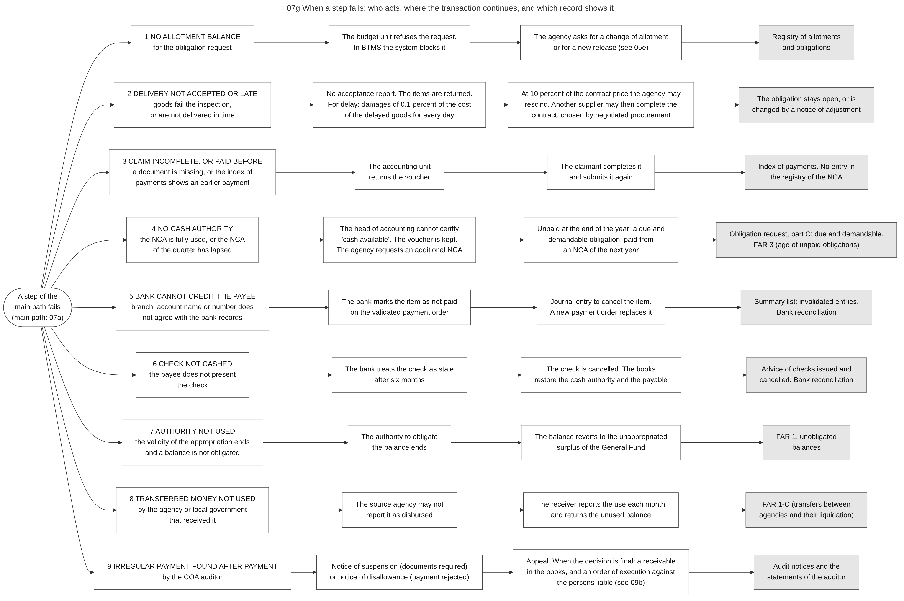

Diagram 07g · Mermaid flowchart
When a step fails: who acts, where the transaction continues, and which record shows it
Question: Diagrams 07a and 07b show the path when every check succeeds. What happens when one check fails, and where can a reader of the records see that it failed?

What the diagram shows
- Question: diagrams 07a and 07b show the path when every check succeeds. What happens when one check fails, and where can a reader of the records see that it failed?
- How to read it: each row is one kind of failure, in the order of the process. The rows are separate cases, not a sequence. Column 1 = what fails. Column 2 = who acts and how. Column 3 = where the transaction continues. Column 4 (grey) = the record or report in which the failure is visible.
- Why it matters for a process model: each row is a path that leaves the main sequence. A model that contains only the main sequence cannot represent unpaid obligations, lapsed authority or recovered payments.
- Sources: row 1, the registry balance is taken at every entry to prevent obligations above the allotment [GAM-V1 Ch.3 s.10]; changes of allotment and their approval [NBC599 s.3.13]; BTMS refuses an obligation above the allotment [CL2025-8]. Row 2, items that do not conform are returned to the supplier [GAM-V1 Ch.8 s.15]; damages of one tenth of one percent of the cost of the delayed goods for every day of delay, and the right to rescind when they reach 10 percent of the contract price [IRR12009 s.71.1.4]; take-over of an ended contract by negotiated procurement [IRR12009 s.35.3]; notice of adjustment of an obligation [GAM-V1 Ch.3 ss.13-14]. Row 3, check of completeness and of the index of payments [GAM-V1 Ch.6 s.12]. Row 4, the voucher is kept when the registry of the NCA shows no balance [GAM-V1 Ch.6 s.12]; a regular NCA lapses at the end of the quarter, additional NCAs, and the regular NCA covers payables of the current and of earlier years [NBC599 s.4.2]; aging of unpaid obligations in FAR 3 and monthly disbursements in FAR 4 [JC2019-1]. Row 5, a payment order may be invalidated when the bank branch, the account name or the account number does not agree with the bank records; journal entry and new payment order [GAM-V1 Ch.6 s.54]; remarks of the bank [CL2018-14]. Row 6, stale checks and the entry that restores the payable [GAM-V1 Ch.6 ss.44-45]; the law gives two years [PD1445 s.97]. Row 7, unused balances revert to the unappropriated surplus of the General Fund [NBC599 s.3.6][EO292-B6 s.28]. Row 8, transfers are not disbursements until the receiver has used them for accepted deliveries [NBC599 s.3.4]; reports of the receiver within ten days after each month and return of the unused balance [GAM-V1 Ch.6 s.63]; report FAR 1-C [JC2019-1]. Row 9, notices of suspension and of disallowance, appeal, finality, order of execution [COA2009-006]; a disallowance enters the books only when it is final and executory [GAM-V1 Ch.6 s.46].
- Weakness reported: the stock of expenditure arrears in 2023 was above 10 percent of expenditure (indicator 22.1, score D) [PEFA2025].
Code

---
title: "07g When a step fails: who acts, where the transaction continues, and which record shows it"
config:
flowchart:
wrappingWidth: 900
---
flowchart LR
%% QUESTION THIS DIAGRAM ANSWERS: diagrams 07a and 07b show the path when every check succeeds. What happens when one check fails, and where can a reader of the records see that it failed?
%% READING: each row is one kind of failure, in the order of the process. The rows are separate cases, not a sequence. Column 1 = what fails. Column 2 = who acts and how. Column 3 = where the transaction continues. Column 4 (grey) = the record or report in which the failure is visible.
%% WHY IT MATTERS FOR A PROCESS MODEL: each row is a path that leaves the main sequence. A model that contains only the main sequence cannot represent unpaid obligations, lapsed authority or recovered payments.
%% SOURCES: row 1, the registry balance is taken at every entry to prevent obligations above the allotment [GAM-V1 Ch.3 s.10]; changes of allotment and their approval [NBC599 s.3.13]; BTMS refuses an obligation above the allotment [CL2025-8]. Row 2, items that do not conform are returned to the supplier [GAM-V1 Ch.8 s.15]; damages of one tenth of one percent of the cost of the delayed goods for every day of delay, and the right to rescind when they reach 10 percent of the contract price [IRR12009 s.71.1.4]; take-over of an ended contract by negotiated procurement [IRR12009 s.35.3]; notice of adjustment of an obligation [GAM-V1 Ch.3 ss.13-14]. Row 3, check of completeness and of the index of payments [GAM-V1 Ch.6 s.12]. Row 4, the voucher is kept when the registry of the NCA shows no balance [GAM-V1 Ch.6 s.12]; a regular NCA lapses at the end of the quarter, additional NCAs, and the regular NCA covers payables of the current and of earlier years [NBC599 s.4.2]; aging of unpaid obligations in FAR 3 and monthly disbursements in FAR 4 [JC2019-1]. Row 5, a payment order may be invalidated when the bank branch, the account name or the account number does not agree with the bank records; journal entry and new payment order [GAM-V1 Ch.6 s.54]; remarks of the bank [CL2018-14]. Row 6, stale checks and the entry that restores the payable [GAM-V1 Ch.6 ss.44-45]; the law gives two years [PD1445 s.97]. Row 7, unused balances revert to the unappropriated surplus of the General Fund [NBC599 s.3.6][EO292-B6 s.28]. Row 8, transfers are not disbursements until the receiver has used them for accepted deliveries [NBC599 s.3.4]; reports of the receiver within ten days after each month and return of the unused balance [GAM-V1 Ch.6 s.63]; report FAR 1-C [JC2019-1]. Row 9, notices of suspension and of disallowance, appeal, finality, order of execution [COA2009-006]; a disallowance enters the books only when it is final and executory [GAM-V1 Ch.6 s.46].
%% WEAKNESS REPORTED: the stock of expenditure arrears in 2023 was above 10 percent of expenditure (indicator 22.1, score D) [PEFA2025].
S(["A step of the<br/>main path fails<br/>(main path: 07a)"])
S --> A1["1 NO ALLOTMENT BALANCE<br/>for the obligation request"] --> A2["The budget unit refuses the request.<br/>In BTMS the system blocks it"] --> A3["The agency asks for a change of allotment<br/>or for a new release (see 05e)"] --> A4["Registry of allotments<br/>and obligations"]:::rec
S --> B1["2 DELIVERY NOT ACCEPTED OR LATE<br/>goods fail the inspection,<br/>or are not delivered in time"] --> B2["No acceptance report. The items are returned.<br/>For delay: damages of 0.1 percent of the cost<br/>of the delayed goods for every day"] --> B3["At 10 percent of the contract price the agency may<br/>rescind. Another supplier may then complete the<br/>contract, chosen by negotiated procurement"] --> B4["The obligation stays open, or is<br/>changed by a notice of adjustment"]:::rec
S --> C1["3 CLAIM INCOMPLETE, OR PAID BEFORE<br/>a document is missing, or the index of<br/>payments shows an earlier payment"] --> C2["The accounting unit<br/>returns the voucher"] --> C3["The claimant completes it<br/>and submits it again"] --> C4["Index of payments. No entry in<br/>the registry of the NCA"]:::rec
S --> D1["4 NO CASH AUTHORITY<br/>the NCA is fully used, or the NCA<br/>of the quarter has lapsed"] --> D2["The head of accounting cannot certify<br/>'cash available'. The voucher is kept.<br/>The agency requests an additional NCA"] --> D3["Unpaid at the end of the year: a due and<br/>demandable obligation, paid from<br/>an NCA of the next year"] --> D4["Obligation request, part C: due and demandable.<br/>FAR 3 (age of unpaid obligations)"]:::rec
S --> E1["5 BANK CANNOT CREDIT THE PAYEE<br/>branch, account name or number does<br/>not agree with the bank records"] --> E2["The bank marks the item as not paid<br/>on the validated payment order"] --> E3["Journal entry to cancel the item.<br/>A new payment order replaces it"] --> E4["Summary list: invalidated entries.<br/>Bank reconciliation"]:::rec
S --> K1["6 CHECK NOT CASHED<br/>the payee does not present<br/>the check"] --> K2["The bank treats the check as stale<br/>after six months"] --> K3["The check is cancelled. The books<br/>restore the cash authority and the payable"] --> K4["Advice of checks issued and<br/>cancelled. Bank reconciliation"]:::rec
S --> F1["7 AUTHORITY NOT USED<br/>the validity of the appropriation ends<br/>and a balance is not obligated"] --> F2["The authority to obligate<br/>the balance ends"] --> F3["The balance reverts to the unappropriated<br/>surplus of the General Fund"] --> F4["FAR 1, unobligated<br/>balances"]:::rec
S --> G1["8 TRANSFERRED MONEY NOT USED<br/>by the agency or local government<br/>that received it"] --> G2["The source agency may not<br/>report it as disbursed"] --> G3["The receiver reports the use each month<br/>and returns the unused balance"] --> G4["FAR 1-C (transfers between<br/>agencies and their liquidation)"]:::rec
S --> H1["9 IRREGULAR PAYMENT FOUND AFTER PAYMENT<br/>by the COA auditor"] --> H2["Notice of suspension (documents required)<br/>or notice of disallowance (payment rejected)"] --> H3["Appeal. When the decision is final: a receivable<br/>in the books, and an order of execution against<br/>the persons liable (see 09b)"] --> H4["Audit notices and the<br/>statements of the auditor"]:::rec
classDef default fill:#ffffff,stroke:#444444,color:#111
classDef rec fill:#e6e6e6,stroke:#555555,color:#111